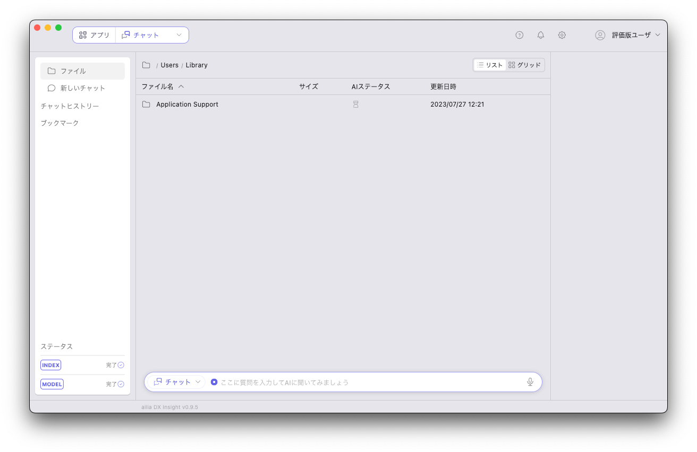
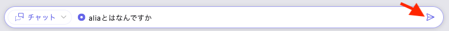
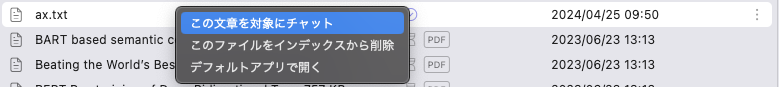
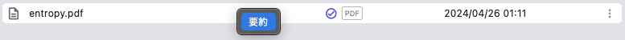
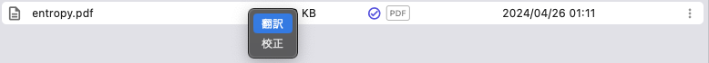

AIを使う
画面構成

AIに質問する
- 画面左上のアプリボタンをクリックしてアプリ選択画面を開き、「チャット」を選択します。
- 画面下のチャットボックスに質問を入力し、送信ボタンをクリック（またはWindowsの場合はCtrl + Enter、macOSの場合はCmd + Enter）します。

- 音声入力を利用する場合
- チャットボックス右のマイクアイコンをクリックします。
当アプリをインストール後、初めてマイクアイコンをクリックした場合、音声認識に必要なAIモデルのダウンロードが開始されます。 ダウンロード完了後より音声入力が利用可能となります。
- 質問内容をマイクに向かって話します
- 再度マイクボタンをクリックし音声入力を完了します。
- チャットボックス右のマイクアイコンをクリックします。
- 音声入力を利用する場合
- AIからの回答が表示されます。
文書ファイル内の情報についてAIに質問する
- ファイルを右クリックして、「この文章を対象にチャット」を選択します。

- 質問を入力し、送信します。
- AIが関連するファイルの内容を元に生成した回答が表示されます。
文書ファイルをインデックスから削除する
- 文章ファイル内の情報についてAIに質問すると、自動的にインデックスが作成されます。インデックスから削除したい、登録済の文書ファイルを右クリックし、「このファイルをインデックスから削除」を選択します。
選択したファイルのAIステータスアイコンが となれば、削除完了です。
となれば、削除完了です。
文章を翻訳する
日本語で書かれた文は英語へ、日本語以外の言語で書かれた文は日本語へ翻訳されます。
- 画面左上のアプリボタンをクリックしてアプリ選択画面を開き、「テキスト翻訳」を選択します。
- 翻訳したい文を入力し、送信します。
- AIが翻訳した結果が表示されます。
文書ファイルを要約する。
- 画面左上のアプリボタンをクリックしてアプリ選択画面を開き、「テキスト要約」を選択します。
- 要約したいファイルを右クリックし、「要約」をクリックします。

- AIが要約した結果が表示されます。
文書ファイルを翻訳する
- 画面左上のアプリボタンをクリックしてアプリ選択画面を開き、「テキスト翻訳」を選択します。
- 翻訳したいファイルを右クリックし、「翻訳」をクリックします。
対応しているファイル形式は、設定画面の「インデックス」タブで設定されているインデックス対象拡張子です。

- AIが翻訳した結果が表示されます。翻訳結果の右下にある「保存」ボタンを押すと、翻訳結果をファイルとして保存することができます。

画像を検索する
「画像検索」アプリより画像検索が可能です。 ファイルビューから画像ファイルを右クリックでインデックス登録することで、類似画像検索を行うことができます。 インデックス登録された画像ファイルを対象に検索が実行されます。 テキストによる検索と、画像による検索の２通りの検索方法があります。
テキストで検索
検索ワードに類似した画像を検索することができます。
- 画面左上のアプリボタンをクリックしてアプリ選択画面を開き、「画像検索」を選択します。
- チャットボックスに検索ワードを入力し、送信します。
- 類似度順に検索結果が表示されます。表示された検索結果をクリックすると、全ての画像が類似度順に並べられグリッド表示されます。

画像で検索
選択した画像に類似した画像を検索することができます。 画像はインデックス登録済である必要があります。
- 画面左上のアプリボタンをクリックしてアプリ選択画面を開き、「画像検索」を選択します。
- 検索したい画像ファイルを右クリックし、「この画像で類似検索」を選択します。
- 類似度順に検索結果が表示されます。表示された検索結果をクリックすると、全ての画像が類似度順に並べられグリッド表示されます。
音声を検索する
「音声検索」アプリより音声検索が可能です。 画像検索と同様に、音声ファイルをインデックス登録することで、テキストによる検索と、音声による検索の２通りの検索方法があります。
画像を生成する
- 画面左上のアプリボタンをクリックしてアプリ選択画面を開き、「画像生成」を選択します。
- 生成したい画像の概要を入力し、送信します。
- AIが画像を生成した結果が表示されます。
議事録を取る
音声認識AIによって、手を動かすことなく議事録を取ることができます。
- 画面左上のアプリボタンをクリックしてアプリ選択画面を開き、「議事録作成」を選択して議事録画面を開きます。
- 画面右上の「会議場所」に会議場所を入力します。会議名を変更することもできます。
- 画面下部の「記録を開始」ボタンをクリックし、議事録の記録を開始します。
音声認識に必要なAIモデルのダウンロードがお済みでない場合は、ダウンロードが開始されます。 ダウンロード完了後より利用可能となります。 - 記録を終えるタイミングで、画面下部の「記録を停止」ボタンをクリックし、議事録を保存します。

記録した議事録を確認する
議事録画面の左側に並ぶ議事録をクリックすると、記録した議事録を見ることができます。
記録された文の右側にあるボタンをクリックすると、文の訂正ができます。
また、画面下部の「記録を開始」ボタンをクリックすることで、再度議事録を記録することができます。